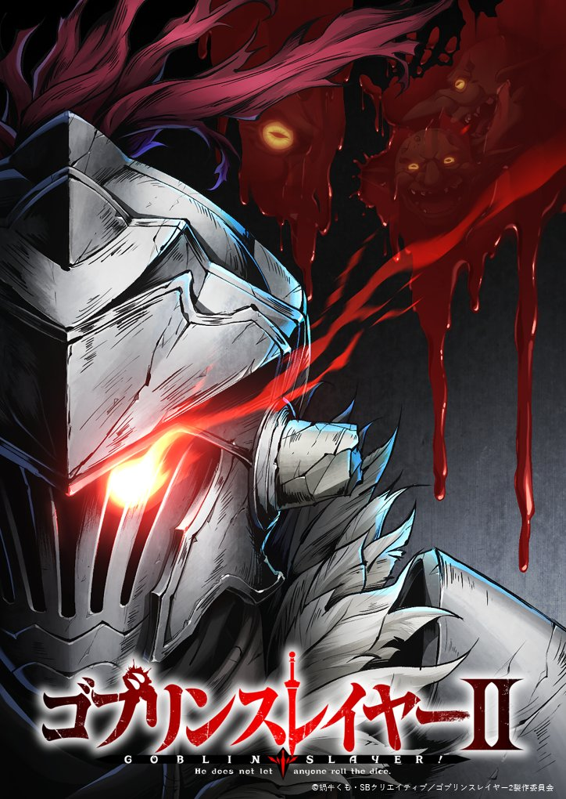
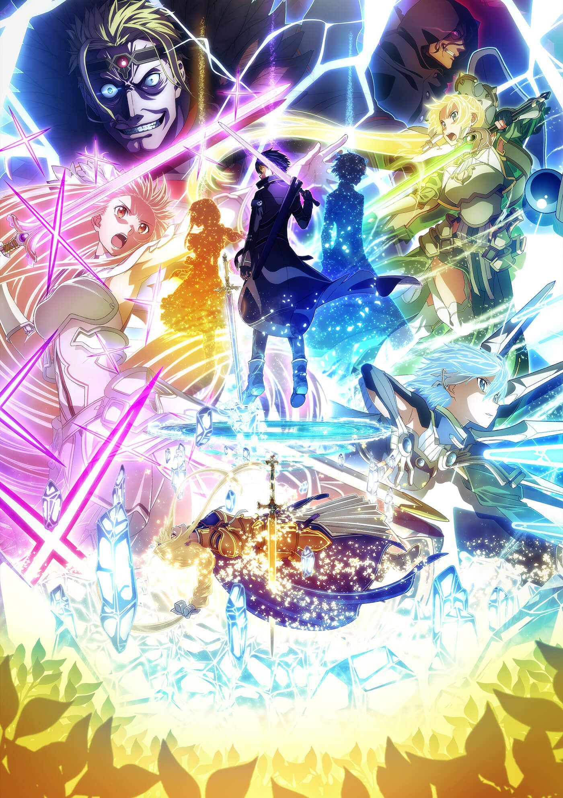
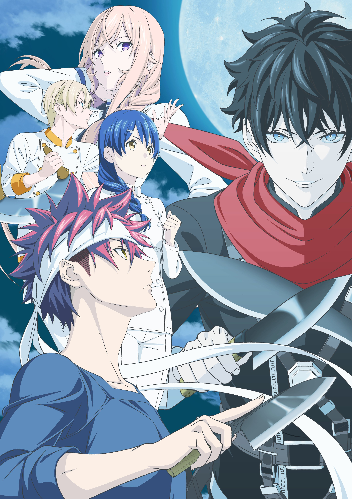
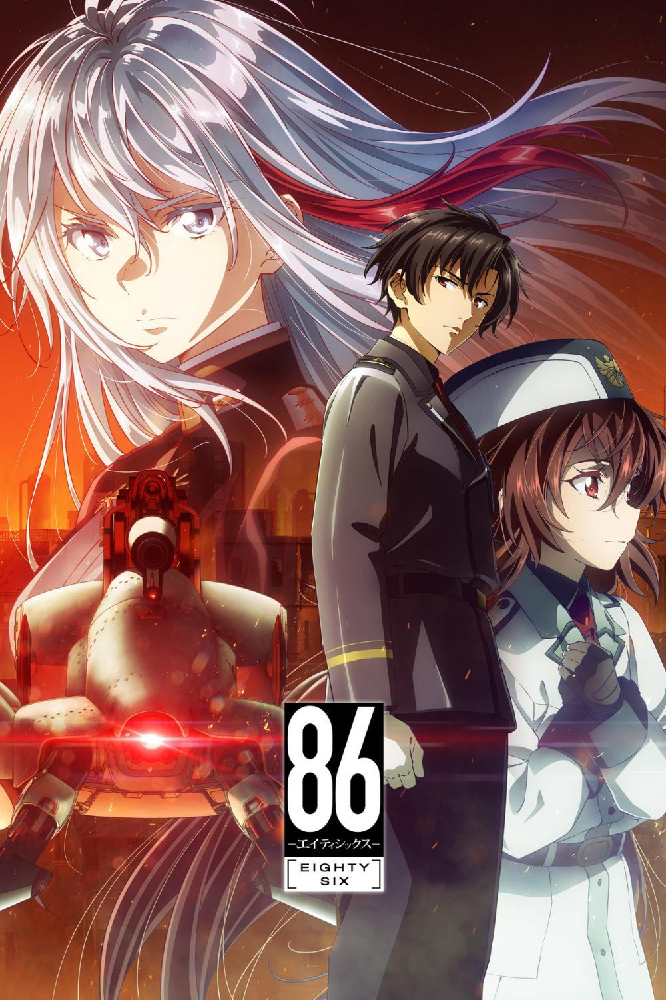
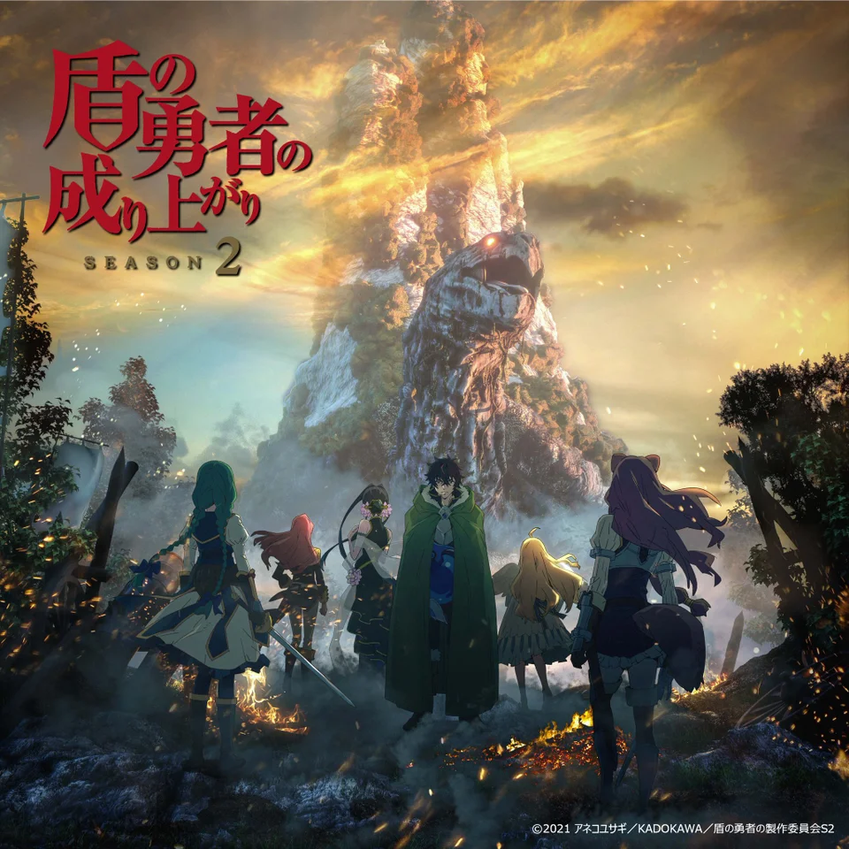

Upcoming TV Show
| # | Title | Description |
|---|---|---|
| 1 |  My Hero Academia Season 6 My Hero Academia Season 6 |
Most human beings have a power called "personality" in this era, but those with power do not necessarily belong to the righteous side. As long as evil appears, there will be heroes who will come forward to save everyone. A boy born without strength - Izuku Midori has longed for a top hero since he was a child, and his dream is to become a great hero, but can he realize his dream without strength? Although there are many difficulties, the young man still does not give up and moves forward bravely towards his goal! |
| 2 | Goblin Slayer Season 2 | "I don't save the world, I just kill goblins."
It is said that in this frontier guild, there is a rare case of being promoted to silver (ranked third rank) just by slaying goblins. After a priestess became an adventurer and joined the team for the first time, he fell into crisis during the adventure. And it was this man called "Goblin Slayer" who saved her. He will do whatever it takes, work tirelessly, and devote himself to sweeping the goblins. The priestess was led by him like this, the counter lady of the guild thanked him, and the cow girl who was a childhood playmate was waiting for him. An Elf girl heard about his deeds and also appeared to entrust a mission |
| 3 |  Dr. Stone Ryusui Dr. Stone Ryusui |
Several thousand years after a mysterious phenomenon that turns all of humanity to stone, the extraordinarily intelligent, science-driven boy, Senku Ishigami, awakens. Facing a world of stone and the total collapse of civilization, Senku makes up his mind to use science to rebuild the world. Starting with his super strong childhood friend Taiju Oki, who awakened at the same time, they will begin to rebuild civilization from nothing... Depicting two million years of scientific history from the Stone Age to present day, the unprecedented crafting adventure story is about to begin! |
Current Best TV Show
| # | Title | Description |
|---|---|---|
| 1 | Sword Art Online Alicization War of Underworld | In the near future, a Virtual Reality Massive Multiplayer Online Role-Playing Game (VRMMORPG) called Sword Art Online has been released where players control their avatars with their bodies using a piece of technology called: Nerve Gear. One day, players discover they cannot log out, as the game creator is holding them captive unless they reach the 100th floor of the game's tower and defeat the final boss. However, if they die in the game, they die in real life. Their struggle for survival starts now |
| 2 | Food Wars! The Fifth Plate | Shokugeki no Soma centers on Yukihira Soma, a middle school student who is determined to surpass his father's culinary skills. One day, his father decides to close down their family restaurant and hone his skills in Europe. Before leaving he enrolls Soma in an elite culinary school that is extremely difficult to enter with a graduation rate of only 10 percent. Will Soma be able to improve his skills, or will the kitchen prove to be too hot? |
| 3 | 86 | According to the Republic of San Magnolia, their ongoing war against the Giadian Empire has no casualties—however, that is mere propaganda. While the silver-haired Alba of the Republic's eighty-five sectors live safely behind protective walls, those of different appearances are interned in a secret eighty-sixth faction. Known within the military as the Eighty-Six, they are forced to fight against the Empire's autonomous Legion under the command of the Republican "Handlers." Vladilena Milizé is assigned to the Spearhead squadron to replace their previous Handler. Shunned by her peers for being a fellow Eighty-Six supporter, she continues to fight against their inhumane discrimination. Shinei Nouzen is the captain of the Spearhead squadron. Infamous for being the sole survivor of every squadron he's been in, he insists on shouldering the names and wishes of his fallen comrades. When the fates of these young souls from two different worlds collide, will it ignite the spark that lights their path to salvation, or will they burn themselves in the flames of despair? |
| 4 | The Rising of Shield Hero | Naofumi Iwatani is summoned to another world to become one of the four heroes, namely the Shield Hero. Starting out with poor popularity and labeled as the weakest, Naofumi found himself betrayed on the third day of his adventure. Having losing faith and money, all that left is just his shield. Vowing to exact revenge to those who had betrayed him, Naofumi's path is...... |